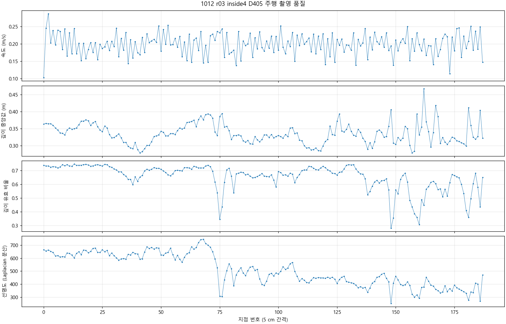
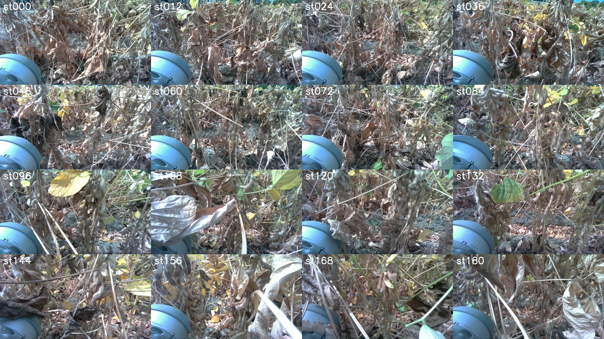
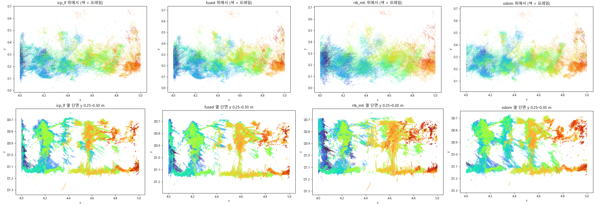
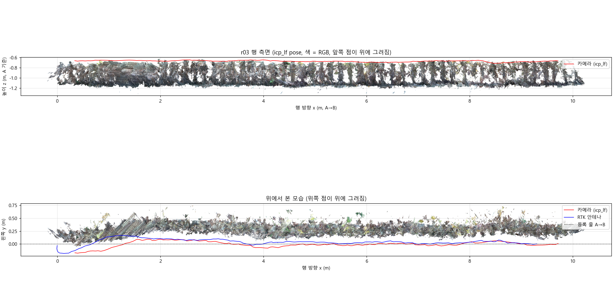
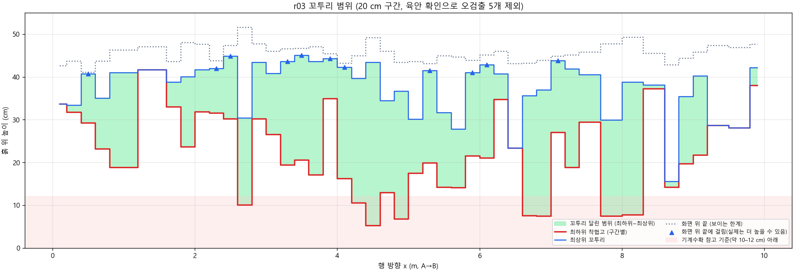
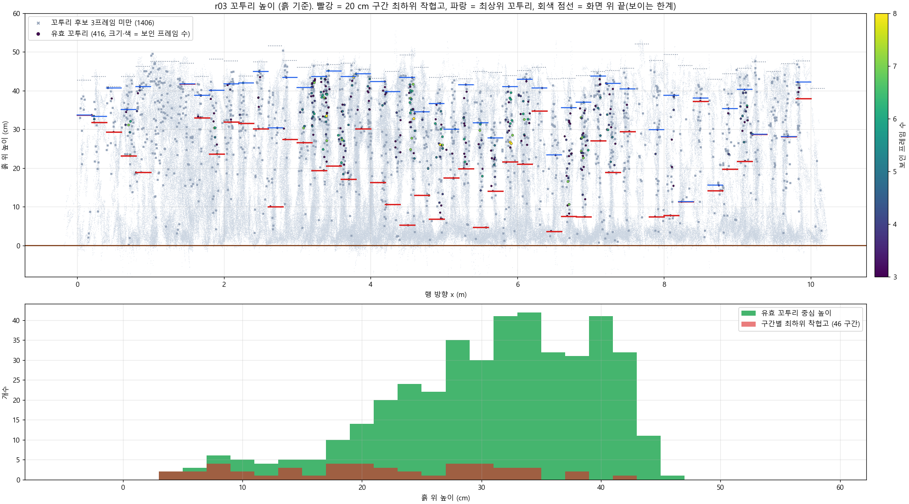
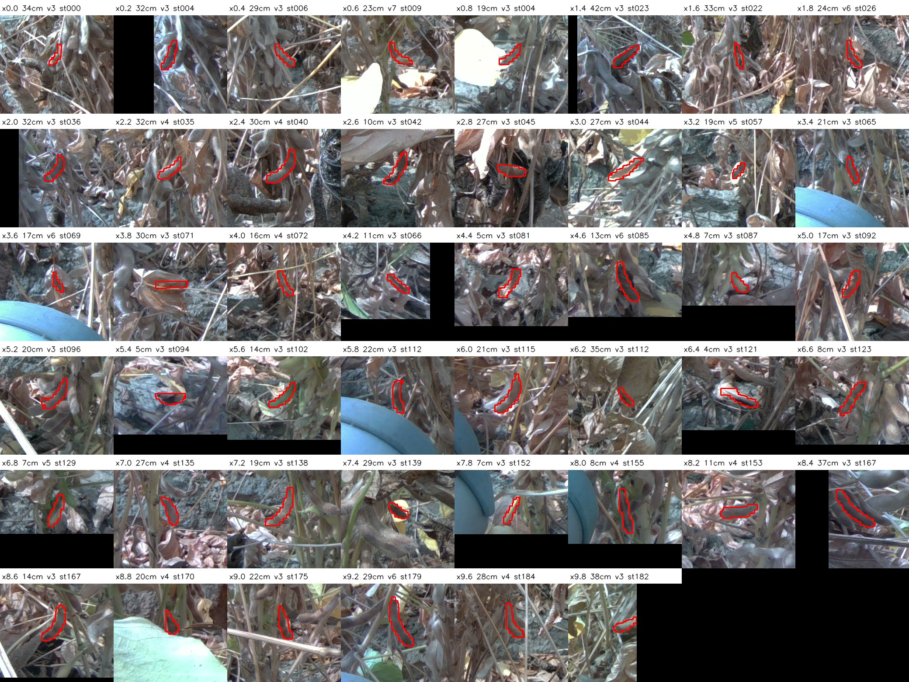

작성 2026-10-12. 대상 세션은 rtktest_1012_1129_s005_drive_r03_inside4다.
walkABm_r03_inside4_1012_112942drive_1012_113007.jsonlrow_plan_r03_1012_112938.jsonanalysis_1002_soy의 흐름(촬영 품질 → RTK → 로봇·카메라 pose → 3D 행 → 꼬투리 → 착협고)을 D405 데이터에 맞게 다시 짰다. D405 깊이는 0.33 m에서 직접 측정값이라, 1002처럼 DA3로 깊이를 만들 필요가 없다.
| 항목 | 결과 |
|---|---|
| RTK | bag 전체 156 s 동안 GGA 623개가 모두 Fixed(4)다. 주행 중에도 Fixed 100 %, hAcc 14 mm다. 1002의 '걸으면 끊김'(이동 중 Fixed 3–14 %)은 이 주행에서 재현되지 않았다. |
| MTi 방위 | 쓸 수 없다. 서 있을 때도 yaw가 약 0.7°/s로 흐른다(156 s에 −178° → −106°). roll·pitch(중력)만 믿을 만하다. |
| 카메라 장착 | 로봇 왼쪽(방위 90.5°)을 본다. 아래로 32° 기울어 있다(session.json 권장값 19.3°와 다름). 영상 가로축 기울기는 −0.9°다. 손-눈 보정(ICP 회전 ↔ MTi 회전)으로 구했다. |
| pose 채택 | icp_lf = ICP 연쇄의 국소 모양 + RTK·중력으로 저주파 보정. 다른 쌍 검증 오차는 중앙 7.5 mm(P90 13 mm), RTK 편차는 RMS 3.6 cm다. |
| 3D 행 | 약 9.4 m, 388만 점(3 mm 격자). 행 좌표계는 x = A→B, y = 왼쪽(작물 쪽), z = 위다. |
| 꼬투리 | PodNet 검출 3,454개 → 3D 병합 1,822개 → 유효 꼬투리(3프레임 이상) 416개. 길이 중앙값 3.4 cm다. |
| 최하위 착협고 | 20 cm 구간 45개(오검출 5개를 육안으로 빼고 다시 계산). 중앙값 21.6 cm, P10–P90은 7.7–34.4 cm다. 10 cm 미만 6구간, 12 cm 미만 8구간. |
| 최상위 꼬투리 높이 | 중앙값 40.3 cm다. 다만 화면 위 끝이 흙 위 약 46 cm라 11구간은 위가 잘렸다. 최상위 높이는 하한값으로만 본다. |
0_capture/)| 항목 | 값 |
|---|---|
| 카메라 | RealSense D405, 1280×720@30. 컬러는 깊이 격자와 같은 센서다 |
| 방식 | 연속 주행. odom 5 cm마다 1장, 188지점, 40.3 s |
| 속도 | 중앙값 0.20 m/s (P5–P95 0.15–0.25). 촬영 간격은 0.20 s다 |
| 작물까지 거리 | 깊이 중앙값 0.33 m (0.29–0.39) |
| 깊이 유효 비율 | 중앙 68 % (P5 44 %) |
| 선명도 (Laplacian 분산) | 중앙 485 (P5 331). 심한 흔들림 프레임은 없다 |
| 노출 | 깊이는 자동(상한 8.5 ms). 컬러는 캡처 스크립트가 컬러 센서를 못 찾아 기본값이다 |
0_capture/fig_capture_qc.png, contact_sheet.jpg

1_bag/)ROS 없이 sqlite3와 CDR로 직접 읽었다(decode_bag.py → bag.npz).
| 토픽 | Hz | 쓰임 |
|---|---|---|
/nmea GGA |
4 | Fixed 여부. 623/623이 품질 4다 |
/gnss NavSatFix |
4 | 확인용. 시각이 수신보다 155 ms 늦게 찍혀 주행 중 lla와 7 cm 흔들린다 |
/filter/positionlla |
100 | 안테나 위치로 사용. MT Manager 레버암이 0이라 안테나 위치로 보며, /gnss와 중앙 1 cm 안에서 맞다 |
/filter/quaternion |
100 | roll·pitch와 짧은 시간의 회전 변화. yaw는 쓰지 않는다 |
/utlidar/robot_odom |
150 | 비교용 pose |
시각: MTi header는 Orin 수신보다 32 ms 이르다. 지점 시각은 captured_epoch − frame_age − 0.032 s로 맞췄다. 시각 오프셋을 −0.4~+0.4 s로 훑어도 뚜렷한 최소가 없었다. RTK의 0.2 s 걸음 오차(12–16 mm)는 시각 문제가 아니다(2_pose/time_offset.json).
2_pose/)icp_edges.py)
Rz(a + b·t) 보정을 ICP 이동 방향과 RTK 이동 방향이 맞도록 풀었다.0. plan/12 CAD 값으로, MTi 좌표 (−0.393, +0.010, −0.632) m다.rtk_mti(2–4단계), odom(Go2 odom ×1.18, RTK에 2D 정렬), icp(연쇄만), fused(포즈 그래프), icp_lf(lowfreq.py).heldout.json)| pose | 보정 중앙 (mm) | P90 (mm) | RTK 편차 RMS (cm) | 판단 |
|---|---|---|---|---|
| icp (연쇄만) | 4.6 | 6.9 | 125 (최대 2.6 m) | 국소는 최고. 전체는 회전이 흘러 못 쓴다 |
| icp_lf (채택) | 7.5 | 13.1 | 3.6 | 국소와 전역의 균형이 가장 좋다 |
| fused (포즈 그래프) | 9.7 | 39.7 | 3.4 | 일부 구간이 크게 틀어진다(수렴 미완) |
| odom ×1.18 | 13.5 | 23.3 | 8.7 (최대 27) | |
| rtk_mti | 35.9 | 70.2 | 0 (기준) | 100 Hz 위치의 0.2 s 걸음 오차가 1–1.5 cm라 국소 정합에는 쓸 수 없다 |

rtk_eval). 0917·1002의 12–18 %와 같은 경향이다.3_cloud/)row_icp_lf_3mm.ply (채택). 비교용으로 row_fused_3mm.ply, row_rtk_mti_3mm.ply, row_odom_3mm.ply가 있다.
행 좌표계: 원점 = 등록점 A, x = A→B(방위 343.5°), y = 왼쪽, z = 위.
카메라는 x 0.31→9.73 m를 지난다. 줄에서 벗어난 정도는 y −17~+10 cm다(시작 1 m에서 가장 크다).
그림:
fig_side_top.png: 측면과 위에서 본 모습fig_pose_compare.png, fig_zoom_check.png: pose 비교, x 4–5 m 확대

화면에 들어오는 높이는 흙 위 약 0–46 cm다(구간별 43–52 cm). 초장은 잴 수 없다. 1007 계획(D405 단일 0.4 m, 착협 구간 형질)대로다.
4_pods/)pods_detect.py, GPU venv)
podseg 복원 가중치), imgsz 640, conf 0.25.pods_detect.py)
pod_zone.py)
pod_zone.py)
lowest_check.py → lowest_pods_sheet.jpg, lowest_pods.csv)
final_table.py):
segments_final.csv, pod_zone_final.json, fig_pod_zone_final.png)| 지표 (20 cm 구간 45개) | 중앙값 | P10 | P90 | 최소 | 최대 |
|---|---|---|---|---|---|
| 최하위 착협고 (꼬투리 중심) | 21.6 cm | 7.7 | 34.4 | 5.3 | 41.7 |
| 최상위 꼬투리 (전체) | 40.3 cm | 29.2 | 43.6 | 15.6 | 45.1 |
| 최상위 꼬투리 (화면 위 끝에 안 걸린 34구간) | 37.5 cm | 28.3 | 42.1 |


lowest_pods_sheet.jpg). 기계수확 참고 기준(약 10–12 cm)에 못 미칠 수 있는 자리다.
검출 영상: 4_pods/panels.mp4
common.enu_to_llh로 바꾼다.masks/*.npz를 쓴다.python 1_bag/decode_bag.py
python 2_pose/icp_edges.py
python 2_pose/build_poses.py # rtk_mti / odom / icp / fused
python 2_pose/lowfreq.py # icp_lf (채택), poses.npz에 추가
python 2_pose/heldout_check.py # 검증 (KEYS=icp_lf,fused,odom,rtk_mti,icp)
python 2_pose/time_offset.py
python 0_capture/capture_qc.py
python 3_cloud/build_cloud.py ; python 3_cloud/zoom_check.py
C:/Users/user/venvs/pheno_gpu/Scripts/python.exe 4_pods/pods_detect.py
python 4_pods/pod_zone.py ; python 4_pods/lowest_check.py # lowest_pods.csv의 verdict 열을 육안으로 채운다
python 4_pods/final_table.py